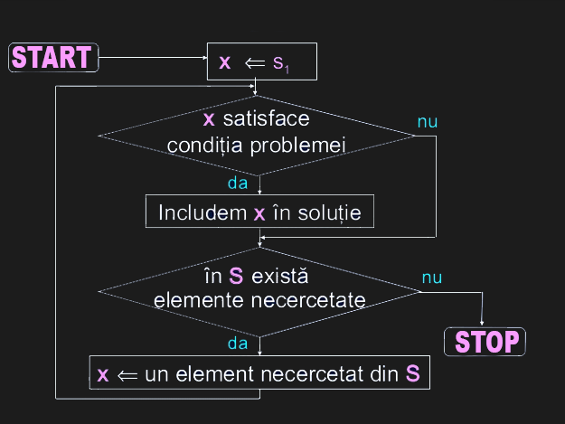

|  |
Despre metoda Trierii
Se numeşte metoda trierii o metodă ce indentifică toate soluţiile
unei probleme în dependenţă de mulţimea soluţiilor posibile.
Toate soluţiile se identifică prin valori, ce aparţin tipurilor
de date studiate: integer, boolean, enumerare, char, subdomeniu,
tablouri unidimensionale.
Fie P o problemă, soluţia căreia se află printre elementele mulţimii
S cu un număr finit de elemente. S={s1, s2 , s3 , … , sn} . Soluţia
se determină prin analiza fiecărui element si din mulţimea S.
Particularitati de implemetare:
Generarea şi cercetarea consecutivă a elementelor mulţimii S.
Utilizarea funcţiilor şi procedurilor pentru fiecare din subproblemele:
- Verificarea apartenenţei elementului cercetat si la soluţie
- Plasarea elementului curent în soluţie
- Generarea următorului element al mulţimii (dacă e necesar)
|